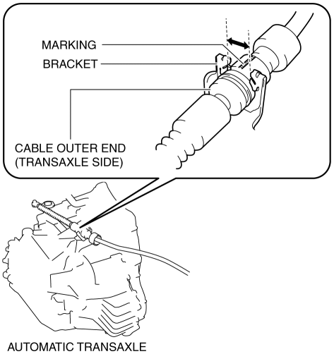

< Previous
Next >
2014 -
Mazda6 -
Transmission/Transaxle
AUTOMATIC TRANSAXLE SHIFT MECHANISM REMOVAL/INSTALLATION
NOTE:
Selector Lever Removal/Installation
1. Disconnect the negative battery cable. (See NEGATIVE BATTERY CABLE DISCONNECTION/CONNECTION [SKYACTIV-G 2.5].)
2. Remove the selector lever knob (type A).
3. Perform the following procedure to remove the selector lever knob (type B).
NOTE:
a. Insert the tool (width: 6 mm or less, thickness: 1 mm or less) as shown in the figure.

b. Move the tool in the direction of arrow (1) in the figure and detach the hook. Move the lock release button cover in the direction of arrow (2) in the figure and remove it.

c. Remove the spring.

d. Remove the selector lever knob.

4. Remove the front console. (See FRONT CONSOLE REMOVAL/INSTALLATION.)
5. Disconnect the selector lever component connector.
6. Remove the selector cable (selector lever side). (See Selector Cable Removal/Installation.)
7. Remove the rear vent duct. (With rear vent) (See REAR VENT DUCT REMOVAL/INSTALLATION.)
8. Remove the nuts from the selector lever.
9. Remove the selector lever.
10. Install the selector lever.
11. Install the nuts from the selector lever.
12. Install the rear vent duct. (With rear vent) (See REAR VENT DUCT REMOVAL/INSTALLATION.)
13. Install the selector cable (selector lever side). (See Selector Cable Removal/Installation.)
14. Connect the selector lever component connector.
15. Install the front console. (See FRONT CONSOLE REMOVAL/INSTALLATION.)
16. Perform the following procedure to install the selector lever knob (type B). a. Install the spring to the selector lever knob.
CAUTION:
b. Install the selector lever knob to the selector lever component.
c. Install the lock release button cover so that it engages with the hook of the selector lever knob.
17. Install the selector lever knob (type A).
18. Connect the negative battery cable. (See NEGATIVE BATTERY CABLE DISCONNECTION/CONNECTION [SKYACTIV-G 2.5].)
Selector Cable Removal/Installation
1. Disconnect the negative battery cable. (See NEGATIVE BATTERY CABLE DISCONNECTION/CONNECTION [SKYACTIV-G 2.5].)
2. Remove the selector lever knob. (See Selector Lever Removal/Installation.)
3. Perform the following procedure to remove the selector cable (selector lever side). a. Remove the front console. (See FRONT CONSOLE REMOVAL/INSTALLATION.)
b. Pull out the safety lock in the direction of the arrow (1) shown in the figure, pull out the lock piece in the direction of the arrow (2) shown in the figure, and release the lock. (See Selector Cable (Selector Lever Side) Installation Note.)
c. While pressing the cable outer end tab (selector lever side) in the direction of the arrow (3) shown in the figure, lift up cable outer end (selector lever side) in the direction of the arrow (4) shown in the figure to detach the cable outer end tab (selector lever side) from the bracket.

d. Remove the cable outer end (selector lever side) from the bracket.
e. Remove the selector cable end (selector lever side) from the selector lever.
4. Perform the following procedure to remove the selector cable (transaxle side). a. Remove the air cleaner case. (See INTAKE-AIR SYSTEM REMOVAL/INSTALLATION [SKYACTIV-G 2.5].)
b. Remove the battery tray. (See BATTERY REMOVAL/INSTALLATION [SKYACTIV-G 2.5].)
c. While pressing the bracket tab in the direction of the arrow (5) shown in the figure, lift up the cable outer end (transaxle side) in the direction of the arrow (6) shown in the figure to detach the bracket tab from the cable outer end (transaxle side).
d. Remove the cable outer end (transaxle side) from the bracket. (See Cable Outer End (Transaxle Side) Installation Note.)
e. Remove the clip from the selector cable end (transaxle side).
f. Remove the selector cable end (transaxle side) from the manual shaft lever.
5. Remove the side wall. (See SIDE WALL REMOVAL/INSTALLATION.)
6. Remove the clip as shown in the figure and remove the nut.
7. Remove the front console. (See FRONT CONSOLE REMOVAL/INSTALLATION.)
8. Remove the grommet as shown in the figure and remove the nuts.
9. Install in the reverse order of removal.
Selector Illumination Bulb Removal/Installation (type A)
1. Disconnect the negative battery cable. (See NEGATIVE BATTERY CABLE DISCONNECTION/CONNECTION [SKYACTIV-G 2.5].)
2. Remove the upper panel. (See UPPER PANEL REMOVAL/INSTALLATION.)
3. Remove the selector lever knob. (See Selector Lever Removal/Installation.)
4. Remove the shift panel. (See SHIFT PANEL REMOVAL/INSTALLATION.)
5. Remove the socket from the shift panel.
6. Remove the selector illumination bulb from the socket.
7. Install in the reverse order of removal.
Selector Cable Adjustment
1. Disconnect the negative battery cable. (See NEGATIVE BATTERY CABLE DISCONNECTION/CONNECTION [SKYACTIV-G 2.5].)
2. Remove the upper panel. (See UPPER PANEL REMOVAL/INSTALLATION.)
3. Remove the selector lever knob. (See Selector Lever Removal/Installation.)
4. Remove the shift panel. (See SHIFT PANEL REMOVAL/INSTALLATION.)
5. Shift the selector lever to the P position.
6. Pull out the safety lock in the direction of the arrow (1) shown in the figure, pull out the lock piece in the direction of the arrow (2) shown in the figure, and release the lock. (See Selector Cable (Selector Lever Side) Installation Note.)
7. Set the manual shaft to the P position.
8. Press in the lock piece in the direction of the arrow (1) shown in the figure, press in the safety lock in the direction of the arrow (2) shown in the figure, and lock it.
9. Perform the procedure in the reverse order of Step 1 to 4 to install the removed part.
10. Perform the selector lever inspection. (See SELECTOR LEVER INSPECTION.)
Selector Cable (Selector Lever Side) Installation Note
1. Verify that the selector lever is in the P position.
2. Verify that the manual shaft is in the P position.
3. Press in the lock piece in the direction of the arrow (1) shown in the figure, press in the safety lock in the direction of the arrow (2) shown in the figure, and lock it.
Cable Outer End (Transaxle Side) Installation Note
1. Assemble the cable outer end (transaxle side) to the bracket so that the marking is in the area of the arrow shown in the figure.

< Previous
Next >
© 2012 Mazda North American Operations, U.S.A.